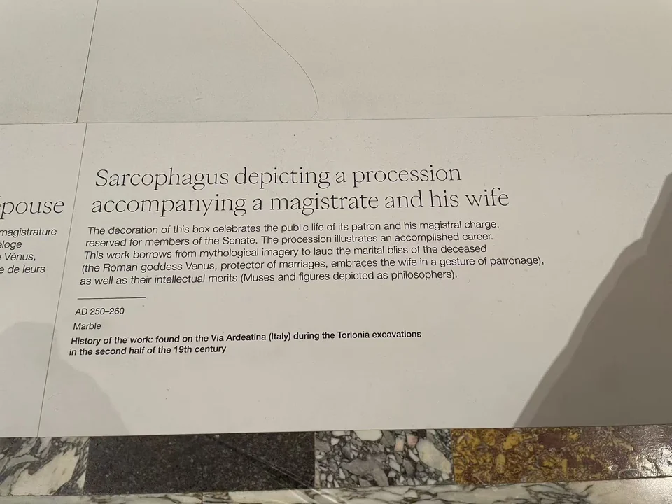

ROMAN SARCOPHAGI / R04
官员与妻子行列石棺
夫妇的并立与随行者的行列，将家庭纪念和公共身份接在一起。

- 年代
- 250–260年
- 材料
- 白色大理石
- 收藏
- Fondazione Torlonia／托洛尼亚收藏
- 观看地点
- 卢浮宫 · 巴黎
- 馆藏号
- MT 395
- 制作地区
- 可能为小亚细亚（收藏方判断）
- 发现地记录
- Via Ardeatina一带（来源字段及现场展牌）
人物沿着曲面转过去
中央人物的长衣垂到脚边，两侧随从转身、靠近，浮雕从正面延伸到圆弧形转角。盆式棺身没有生硬的直角，站立人物因此像一支环绕器身的队伍。收藏方将其解释为官员与妻子的荣誉行列，并识别出护佑婚姻的维纳斯。 [4]
今天看见的完整形态
衣着、人物位置与陪伴者共同表达墓主的身份。它的保存又经历了另一段变化：收藏方记载，原来单块雕成的棺身曾被锯成石板，缺失的背面后来补配。今天的围合形态，包含古代雕刻与后来的组装。 [4]
现场展签 · 1张
